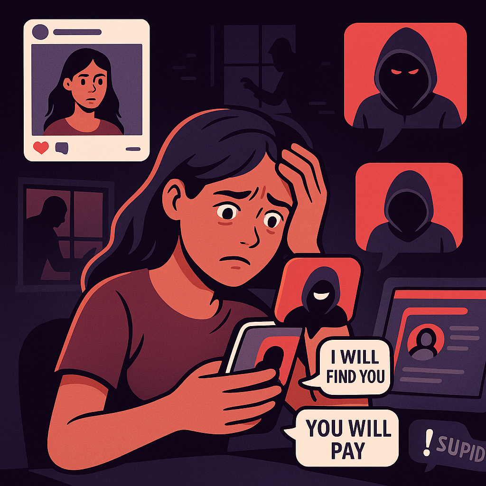
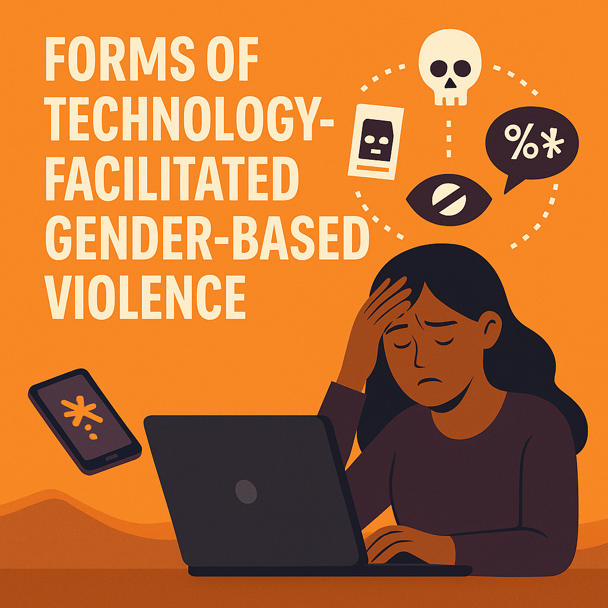

Women, girls, LGBTQ+, and marginalized communities are primarily affected.
Harassment, threats, cyberstalking, image-based abuse, and more.
Technology-Facilitated Gender-Based Violence (TFGBV)
Often begins as early as ages 9-14 and continues into adulthood.
Occurs on social media, email, smart tech, and connected devices.
Did you know? Over 85% of women online globally have witnessed or experienced digital violence. In Kenya, a 2021 survey reported that 1 in 3 women encountered TFGBV during election seasons.
This growing trend reflects how online spaces mirror offline gender discrimination—yet with faster, broader consequences. We need digital safety policies, education, and tech accountability now more than ever.
60% of survivors don't report the abuse
40% of victims remain in contact with their abuser

Technology-facilitated gender-based violence (TFGBV) describes harmful acts or behaviors committed against people using digital technologies, usually women and girls. These acts take advantage of the anonymity and connectivity that technology offers, making it easier for perpetrators to target their victims and inflict more widespread harm.

TFGBV takes many forms, which are constantly evolving with technology. These acts often target women and girls, aiming to humiliate, silence, or control them through digital means. Some common forms include:
These forms not only cause emotional and psychological harm but also infringe on rights to safety, dignity, and expression.
Explore more on UNFPAThe impact of TFGBV goes beyond the screen. Victims experience serious consequences across emotional, physical, social, and economic levels:
These effects can linger for years, diminishing self-worth, eroding trust in technology, and limiting freedom of expression and access to digital resources.
Learn more on GWPS1. What is TFGBV?
2. Which is an example of TFGBV?
3. Who are chiefly targeted by TFGBV?
4. What is "doxxing"?
5. A consequence of TFGBV can be:
Learn how to protect yourself from online abuse and harassment through this detailed guide that provides practical advice on securing your digital presence.
Understand the profound psychological and emotional effects that Technology-facilitated Gender-Based Violence can have on its victims, and learn the best strategies to help prevent it.
This guide explains effective techniques and tools you can use to protect yourself from online and mobile harassment, including how to report TFGBV safely and securely.